3
Phân tích dự đoán cùng với Ensemble Learing
Trong chương này chúng ta học về Ensemble Learning and cách sử dụng nó để làm phân tích dự đoán. Kết thúc chương này chúng ta sẽ hiểu các vấn đều sau:
Ensemble Learing là gì ?
Ensemble Learning là cách xây dựng nhiều mô hình (model) và sau đó kết hợp chúng lại thành một và tạo ra một kết quả tốt hơn những mô hình đó một mình. Như chúng ta đã biết các mô hình (models) đó được tạo ra từ phân loại ( classifer), hồi quy (regressor) hoặc bất cứ cách nào tạo ra models của riêng nó đều có khả năng tính toán khác nhau và để thực hiện một công việc nhất định, khi kết hợp các mô hình này lại với nhau một cách hợp lý thì sẽ tạo ra một mô hình mới mạnh và có hiệu suất cao hơn khi chỉ sử dụng mô hình một cách riêng lẻ. Học tập đồng bộ (Ensemble Learning) được sử dụng trên nhiều lĩnh vực khác nhau bao gồm phân loại dữ liệu (data classification), dự đoán mô hình (predictive modeling), kiểm thử bất thường ( anomaly detection) và nhiều thứ khác nữa.
Tại sao chúng ta cần học tập đồng bộ đầu tiên? Để hiều điều này, chúng ta cần lấy một ví dụ thực tế. Bạn muốn mua một cái TV mới, Nhưng bạn không biết mẫu mới nhất là gì. Nhiệm vụ của bạn là phải tìm kiếm một cái tốt nhất trong tầm giá bạn có thể, nhưng bạn không có đủ hiểu biết trong vấn đề này để đưa ra một quyết định tốt nhất. Khi bạn phải đưa ra một quyết định kiểu dạng thế này bạn phải đi tìm những chuyên gia để tham khảo ý kiến cho vấn đề đó ( tìm kiếm review trên youtube, google ….) Nó sẽ giúp bạn đưa ra một quyết định đúng đắn nhất. Có còn hơn không, thay vì bạn đưa ra quyết định riêng thì bạn thường có xu hướng thu thập thông tin dựa trên quyết định cá nhân và kết hợp vào đó là những ý kiến của những người có chuyên môn. Bởi vì chúng ta thường muốn tối ưu quyết định và giảm thiểu những sai xót.
Xây dựng một mô hình học cùng với học tập đồng bộ (Ensemble Learning)
Khi chúng ta chọn một mô hình, chúng ta thường sử dụng phương pháp là chọn một cái có it lỗi nhất trên dữ liệu training. Vấn đề với phương pháp này là nó có thể không luôn hoạt động tốt. Mô hình này có thể bị thiên vị hoặc không trung với dữ liệu training. THường khi chúng ta tính toán mô hình xử dụng xác nhận chéo. Nó có thể không thể hiện gì cả ở những dữ liệu nó không biết.
Một trong những lý do chính để sử dụng học tập đồng bộ là nó rất hiểu quả bởi nó giảm thiểu nguy cơ lựa trọn trên những mô hình kém. Điều này cho phép nó train dữ liệu một cách đa dạng và sau đó thực hiện tốt trên những dữ liệu chưa biết ( unknow data). Khi chúng ta xây dựng một mô hình sử dụng ensemble learning, những mô hình riêng cần phải đa dạng. Điều này cho phép chúng ( chúng ở đây là cái méo gì thì méo biết- là ensemble learning hay individual models) chọn ra nhiều sắc thái khác nhau trong dữ liệu của chúng ta, vì thế mô hình được tổng hợp sẽ trở nên chính xác hơn.
Sự đa dạng đạt được bằng cách sủ dụng nhiều tham số đào tạo khác nhau cho mỗi mô hình riêng. Nó cho phép những mô hình riêng tạo ra những phán quyết riêng cho dữ liệu đào tạo. Có nghĩa là mỗi mô hình sẽ sử dụng những luật riêng để suy luận, đây là cách mạnh nhất để tạo ra kết quả cuối cùng. Nếu có sự giống nhau giữa các mô hình, chúng ta sẽ biết kết quả đầu ra là chính xác.
Cây quyết định (Decision Tree) là cái gì?
Một cây quyết định (Decision Tree) là một cấu trúc giúp chúng ta chia dữ liệu thành các nhánh ( branches ) và sau đó tạo một quyết định trên các cấp độ(level) khác nhau . Nó cho phép chúng ta đạt tới quyết định cuối cùng bằng cách đi xuống cái cây này . Cây quyết định là một sản phẩm của những thuật toán huấn luyện, những thứ định danh làm cách nào mà chúng ta chia dữ liệu một cách tốt nhất.
Mỗi quyết định được xử lý bắt đầu ở root node ở vị trí trên cùng của cái cây quyết định. Mỗi điểm (node) ở trên cây cơ bản là một quy tắc quyết định ( decision rule ). Các thuật toán xây dựng nên các quy tắc này dựa trên mối quan hệ giữa dữ liệu đầu vào (input data) và những nhãn đích trong dữ liệu đào tạo. Những giá trị trong dữ liệu đầu vào được sử dụng tận dụng để dự đoán kết quả cho giá trị đầu ra.
Bây giờ thì tạm hiểu khái niệm cơ bản về Cây quyết định , Cái tiếp theo cần hiểu là làm thế nào để những cái cây đó tự động được xây dựng ( tự mọc ). Chúng ta cần những thuật toán có thể xây dựng một cái cây tối ưu dựa trên dữ liệu của chúng ta. Để hiểu điều này chúng ta cần hiểu khái niệm về entropy. Trong chủ đề này chúng ta nhắc đến đó là entropy thông tin không phải là entropy nhiệt động học trong vật lý. Entropy cơ bản là một cái thước đo của sự không chắc chắn. Một trong những mục tiêu chính của Cây quyết định là sự giảm thiểu những thứ không chắc chắn khi chúng ta di chuyển từ root node (điểm gốc) tới những điểm khác (leaf nodes). Khi chúng ta nhìn thấy những điểm dữ liệu không biết, chúng ta hoàn toàn không thể chắc chắn về kết quả đầu ra. Khi chúng ta tới các nút, điểm lá (leaf node) chúng ta phải biết được kết quả đầu ra. điều này có nghĩa là chúng ta cần xây dựng một Cây quyết định theo một cách là giảm thiểu những dữ liệu không biết theo các cấp độ khác nhau. điều này có nghĩa là chúng ta cần giảm số entropy khi chúng ta di chuyển dần xuống cây dữ liệu.
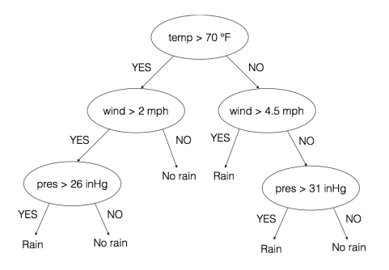
Một cây dữ liệu cơ bản lấy từ website: https://prateekvjoshi.com/
Túm cái vái lại là Cây quyết định là một một mô hình học máy có dạng như một cái cây. Mỗi nhánh không có lá trên cái cây này là một điểm quyết định, những điểm khác gọi là điểm quyết định. Mỗi điểm đưa ra một thử nghiệm cụ thể để xác định nơi đến tiếp theo. Dựa trên những kết quả đầu ra chúng ta sẽ đưa ra quyết định đi theo hướng trái hay phải của cái cây. Mô hình Cây quyết định phía bên trên là một bài toán dự đoán xem trời có mưa hay không dựa trên 3 tham số cơ bản là nhiệt độ,tốc độ gió,và độ ẩm.
Để xây dựng một mô hình cây quyết định một cách tự động thì thật sự là một thủ thuật… hiểu khái niệm về cái cây này thì rất dễ. nhưng xây dựng được một cây tốt ưu lại còn tự động nữa thì ….. Làm sao biết nó là tối ưu, lấy thuộc tính nào làm root node? làm sao chúng ta quyết định được các ngưỡng… đó là entropy nhưng làm sao để đo được entropy ??? ta có hàm số sau để đo entropy
Làm sao để giảm số entropy ở cây quyết định ?
Hãy xem một ví dụ với bộ dữ liệu (dataset) với 60 mục trong đó mục đầu tiên xuất hiện 14 lần mục thứ 2 xuất hiện 27 lần và mục thứ 3 xuất hiện 19 lần thay vào hàm số entropy bên trên ta có:
Trong một cây quyết định, chúng ta cần chia bộ dữ liệu thành 2 đường và giảm số entropy. đây là kết quả sau khi chúng ta chia bộ dữ liệu:
Giờ thì đo đạc kết quả entropy thế nào
left entropy = - (5/37)log(5/37) - (21/37)log(21/37) - (11/37)log(11/37) = 1.374
right entropy = - (9/23)log(9/23) - (6/23)log(6/23) - (8/23)log(8/23) = 1.565
Để đo lường kết quả tổng thể entropy của 2 nhánh nhỏ. Chúng ta cần lấy tổng số dựa trên số lượng mục trên mỗi nhánh. bên trên ta coi nhánh trái có 37 mục và bên phải có 23 mục (items).
(kết quả tổng thể) overall entropy = (37/60)*1.374 + (23/60)*1.565 = 1.447
xem thử kết quả khác nhau giữa số entropy ban đầu và số entropy tổng thể ta vừa tính
information gain = 1.537 - 1.447 = 0.09
information gain là kết quả thông tin ta thu được nếu chia dữ liệu theo cách trên. Ở mỗi điểm chúng ta lặp lại việc này và lấy điểm thông tin thu được cao nhất.
Xây dựng một phân loại Cây quyết định ( Decision Tree classifier)
Giờ thì mở PyCharm lên và tạo một file Python nào:
# import package
import numpy as np
import matplotlib.pyplot as plt
from sklearn.metrics import classification_report
from sklearn import model_selection
from sklearn.tree import DecisionTreeClassifier
from utilities import visualize_classifier
# Chúng ta xử dụng dữ liệu trong file data_decision_trees.txt . Trong file này dữ liệu ở mỗi dòng được tách bởi dấu [,]. 2 giá trị đầu tiên tương ứng với dữ liệu vào(input data) và giá trị cuối cùng tương ứng là nhãn đích (target label).
input_file="data/data_decision_trees.txt"
data=np.loadtxt(input_file,delimiter=',')
X,y=data[:,:-1],data[:,-1]
# Tách dữ liệu thành 2 lớp dựa trên nhãn của chúng
class_0=np.array(X[y==0])
class_1=np.array(X[y==1])
# Xem thử dữ liệu nhập xử dụng scatter plot của plt:
plt.figure()
plt.scatter(class_0[:,0],class_0[:,1],s=75,facecolors='gray',edgecolors='gray',linewidth=1,marker='x')
plt.scatter(class_1[:, 0], class_1[:, 1], s=75, facecolors='white', edgecolors='black', linewidth=1, marker='o')
plt.title('Dữ liệu nhập')
# Chúng ta cần chia dữ liệu vào trong tập dữ liệu để train và test
X_train,X_test,y_train,y_test = model_selection.train_test_split(X,y,test_size=0.25,random_state=5)
# Tạo xây dựng và biểu diễn phân loại Cây Quyết định dựa trên tập dữ liệu. tham số random_state chỉ đến số hạt giống được sử dụng bởi những số ngẫu nhiên cần thiết được tạo rađể khởi tạo cho thuật toán phân loại Cây Quyết Định. Tham số max_depth chỉ ra "độ cao" của cây quyết định mà chúng ta muốn xây dựng:
params={'random_state':0,'max_depth' :4}
classifier=DecisionTreeClassifier(**params)
classifier.fit(X_train,y_train)
visualize_classifier(classifier,X_train,y_train,'Tập dữ liệu train')
# tính dữ liệu đầu ra trên phép phân loại dựa trên tập dữ liệu và biểu diễn nó:
y_test_pred=classifier.predict(X_test)
visualize_classifier(classifier,X_test,y_test,"Tập dữ liệu test")
# Đánh giá hiệu suất của phép phân loại bằng cách in báo cáo của phép phân loại
class_names=['Class-0','Class-1']
print("\n"+"#"*40)
print("\n Đánh giá hiệu suất phân loại trên Tập dữ liệu train\n")
print(classification_report(y_train,classifier.predict(X_train),target_names=class_names))
print("#"*40+"\n")
print("#"*40)
print("\n Hiệu suất phân loại trên Tập dữ test\n")
print(classification_report(y_test,y_test_pred,target_names=class_names))
print("#"*40+"\n")
plt.show()
Chạy code trên với PyCharm bạn sẽ thấy nó hiện lên 2 Biểu đồ như sau.
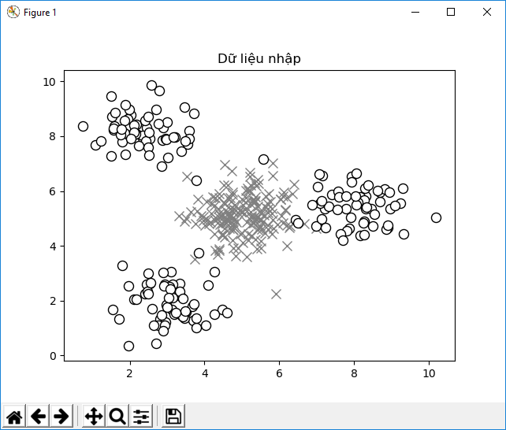
1.0 Biểu đồ này biểu diễn dữ liệu nhập
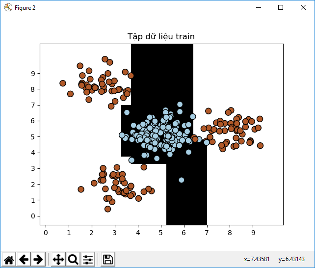
2.0 Biểu đồ này thể hiện ranh giới phân loại dựa trên tập dữ liệu test
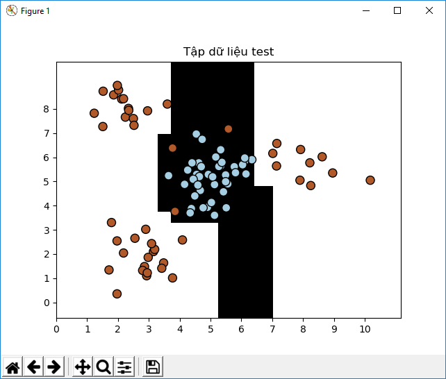
Và sau đây là output được in ra ở Terminal:
########################################
Đánh giá hiệu suất phân loại trên Tập dữ liệu train
precision recall f1-score support
Class-0 0.99 1.00 1.00 137
Class-1 1.00 0.99 1.00 133
micro avg 1.00 1.00 1.00 270
macro avg 1.00 1.00 1.00 270
weighted avg 1.00 1.00 1.00 270
########################################
########################################
Hiệu suất phân loại trên Tập dữ test
precision recall f1-score support
Class-0 0.93 1.00 0.97 43
Class-1 1.00 0.94 0.97 47
micro avg 0.97 0.97 0.97 90
macro avg 0.97 0.97 0.97 90
weighted avg 0.97 0.97 0.97 90
Nhìn vào phần output trên terminal bạn có thể thấy một Hiệu suất của phép phân loại được biểu hiện bởi (Precision(độ chính xác),recall(triệu hồi …hồi tưởng méo biết là cái giề), và f1-scores ( điểm f1). Độ chính xác chỉ ra tính chính xác và recall là số lượng phần tử (items) được lấy theo tỷ lệ phần tram của tổng số items. Một bộ phân loại tốt sẽ có điểm Precision(độ chính xác),recall cao. nhưng thường phải đánh đổi giữa hai số này. Vì thế chúng ta có chỉ số f1-score để tháy sự khác biệt. F1-Score là số trung bình của precision và recall, giúp cân bằng hai giá trị đó.
Random Forset và Extremly Random Forset là gì?
Một Random Forset là một trường hợp cụ thể của học độc lập (Ensemble learning) mà mô hình (models) được xây dựng bang Cây Quyết Định (Decision Tree). Nhóm cây quyết định này sau đó được sử dụng để dự đoán kết quả đầu ra. Chúng ta sử dụng một tập con ngẫu nhiên (random subset) của dữ liệu đào tạo (training data) để xây dựng lên mỗi Cây quyết định (Decision Tree). Điều này đảm bảo tính đa dạng giữa các cây quyết định khác nhau. Trong phần đầu tiên, chúng ta sẽ thảo luận về một trong những thứ quan trọng nhất trong ensemble learning là đảm bảo sự đa dạng của các mô hình cá nhân.
Một trong những thứ quan trọng về Random Forest là chúng không overfit. Như chúng ta đã biết, overfitting là vấn đề chúng ta thường phải gặp trong ML. Bằng cách xây dựng một bộ cây quyết định (Decision Trees) sử dụng nhiều tập hợp dữ liệu con khác nhau, chúng ta đảm bảo những mô hình đó không overfit dữ liệu đào tạo. Trong suốt quá trình xây dựng lên cái cây, những điểm (nodes) được chia ra liên tiếp điểm ngưỡng tốt nhất được chọn để giảm số entropy theo mỗi mức độ. Các điểm chia không xem xét tất cả các tính năng, đặc điểm trong bộ dữ liệu đầu vào, thay vì thế nó chọn sự phân chia tốt nhất trong số ngẫu nhiên các tập dữ liệu của các tính năng được xem xét. Vì thế tính ngẫu nhiên có xu hướng làm tăng độ lệch (số bias) của một Random Forset, nhưng phương sai giảm ( số variance) bởi tính trung bình. Vì thế chúng ta sẽ kết thúc với một mô hình mạnh.
Entremely Random Forest lấy ngẫu nhiên trên level tiếp theo, cùng với việc lấy ngẫu nhiên các tập tính năng(features), hạn mức, mức ngưỡng (thresholds) cũng được chọn ngẫu nhiên. Các mức ngẫu nhiên được tạo ra và chọn làm quy tắc chia,tách. Và làm giảm phương sai (variance) của phương trình mo hình. Vì thế vùng biên chọn sử dụng Extremely Random Forest có xu hướng chuẩn hơn là sử dụng một cái Random Forest.
Xây dựng một bộ phân loại sử dụng Random Forests và Extremely Random Forests
Bây giờ thì chúng ta thử xây dựng một bộ phân loại dựa trên Random Forests và Extremely Random Forests. Cách xây dựng 2 bộ phân loại trên rất giống nhau, vậy nên chúng ta sẽ xử dụng một bộ đầu vào được chỉ định cần thiết để xây dựng.
Tạo một File Python mới và bắt đầu:
import argparse
import numpy as np
import matplotlib.pyplot as plt
from sklearn.metrics import classification_report
from sklearn import model_selection
from sklearn.ensemble import RandomForestClassifier, ExtraTreesClassifier
from utilities import visualize_classifier
# Định nghĩa một đối số phân tích cho Python để chúng ta có thể lấy kiểu phân loại như là một tham số đầu vào. Dựa trên tham số này chúng ta có thể xây dựng một bộ phân loại Random Forest hoặc một bộ phân loại Extremely Random Forests
def build_arg_parser():
parser=argparse.ArgumentParser(description='Classify data using Enxemble Learning Techniques')
parser.add_argument('--classifier-type',dest='classifier_type',required=True,choices=['rf','erf'],help="Type of classifier to use can be either 'rf' or 'erf'")
return parser
# Định nghĩa hàm Main và parser tham số đầu vào
if __name__=='__main__':
# Parser tham số đầu vào
args=build_arg_parser().parse_args()
classifier_type=args.classifier_type
# Chúng ta sẽ xử dụng dữ liệu từ file data/data_random_forest.txt. Mỗi dòng trong file này sẽ có một dấu phẩy để phân chia các giá trị. Hai giá trị đầu tiên tương ứng là giá trị đầu vào ,và giá trị cưới cùng tương ứng là nhãn đích. Chúng ta có 3 lớp khác biệt trong tập dũ liệu này.
# Load input data
input_file='data/data_random_forests.txt'
data=np.loadtxt(input_file,delimiter=",")
X,y=data[:,:-1],data[:,-1]
# Tách dữ liệu đầu vào thành 3 lớp
class_0=np.array(X[y==0])
class_1=np.array(X[y==1])
class_2=np.array(X[y==2])
# In dữ liệu đầu vào lên biểu đồ
plt.figure()
plt.scatter(class_0[:,0],class_0[:,1],s=75,facecolors="white",edgecolors="black",linewidths=1,marker='s')
plt.scatter(class_1[:,0],class_1[:,1],s=75,facecolors="black",edgecolors="black",linewidths=1,marker='o')
plt.scatter(class_2[:,0],class_2[:,1],s=75,facecolors="gray",edgecolors="black",linewidths=1,marker='^')
plt.title(" Dữ liệu đầu vào ")
# Chia dữ liệu vào trong tập training và testing (split the data into training and testing datasets):
X_train,X_test,y_train,y_test=model_selection.train_test_split(X,y,test_size=0.25,random_state=5)
#Định nghĩa tham số để sử dụng khi chúng ta xây dựng bộ phân loại. tham số n_estimators chỉ ra số cây (trees) chúng ta sẽ xây dựng, và tham số max_depth là số bậc (level) trên mỗi cây. Tham số random_state là số hạt giống (seed) của số ngẫu nhiên cần thiết để khởi tạo một thuật toán phân loại Random Forest
# Ensemble Learning classifier
params={'n_estimators':100,'max_depth':4,'random_state':0}
#Dựa trên tham số đầu vào, chúng ta cũng xây dựng một Bộ phân loại Random Forests hoặc một Extremely Random Forest classifier
if classifier_type=='rf':
classifier=RandomForestClassifier(**params)
else:
classifier=ExtraTreesClassifier(**params)
# Train và hiển thị bộ phân loại ra màn hình:
classifier.fit(X_train,y_train)
visualize_classifier(classifier,X_train,y_train,"Bộ dữ liệu training(training dataset)")
# Tính toán (dự đoán) kết quả đầu ra dựa trên bộ dữ liệu test và hiển thị ra màn hình:
y_test_pred=classifier.predict(X_test)
visualize_classifier(classifier,X_test,y_test,"Bộ dữ liệu testing(testing dataset)")
# Đánh giá hiệu suất của phép phân loại bằng cách print report
class_names=['Class-0','Class-1','Class-2']
print("\n","#"*44)
print("\n Hiệu suất phân loại trên dữ liệu training (training dataset)")
print(classification_report(y_train,classifier.predict(X_train),target_names=class_names))
print("#"*44,"\n")
print("\n","*"*44)
print("\n Hiệu suất phân loại trên dữ liệu testing(testing dataset)")
print(classification_report(y_test,y_test_pred,target_names=class_names))
print("*"*40)
Lưu file python trên dưới tên random_forest.py và chạy file đó trong terminal với tham số --classifier-types rf như sau:
Ta có kết quả sau
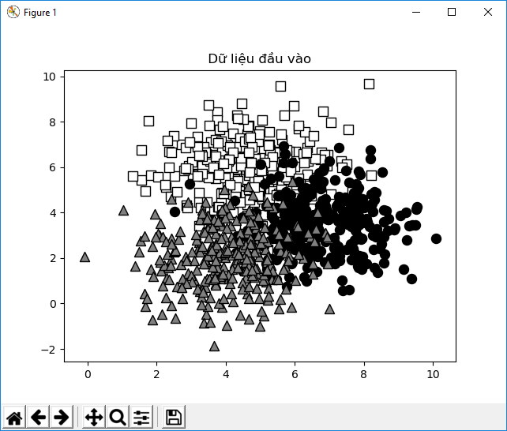
Figure 1 Dữ liệu đầu vào
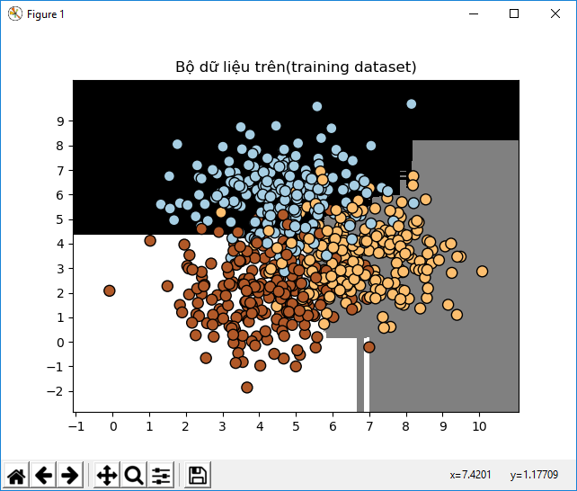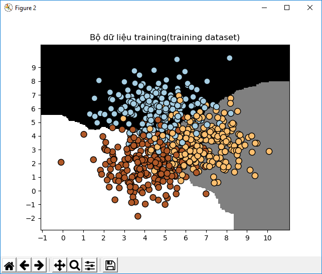
Hình 1 Dữ liệu training với tham số rf
Hình 1 Dữ liệu training với tham số rf
Hình 2 Bộ dữ liệu train với tham số erf
Hình 2 Bộ dữ liệu train với tham số erf
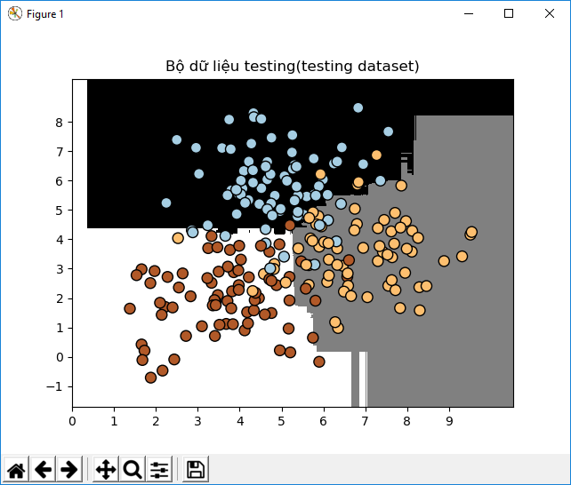 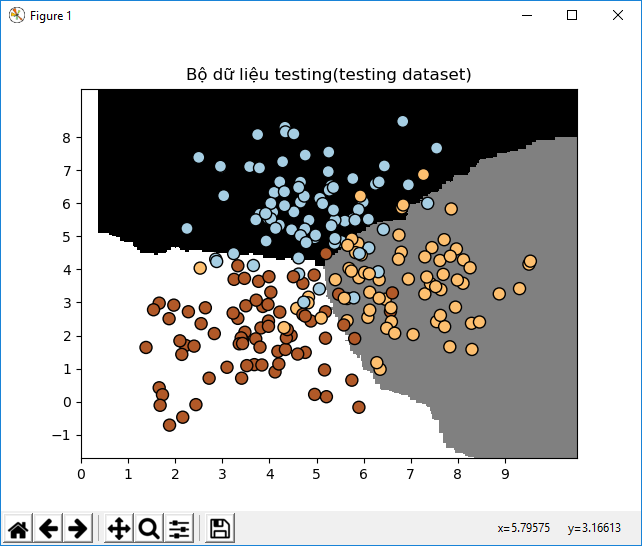
1 Dữ liệu test với tham số rf
1 Dữ liệu test với tham số rf
2 Dữ liệu test với tham số erf
Output ở Terminal tham số rf:
############################################
Hiệu suất phân loại trên dữ liệu training (training dataset)
precision recall f1-score support
Class-0 0.91 0.86 0.88 221
Class-1 0.84 0.87 0.86 230
Class-2 0.86 0.87 0.86 224
micro avg 0.87 0.87 0.87 675
macro avg 0.87 0.87 0.87 675
weighted avg 0.87 0.87 0.87 675
############################################
********************************************
Hiệu suất phân loại trên dữ liệu testing(testing dataset)
precision recall f1-score support
Class-0 0.92 0.85 0.88 79
Class-1 0.86 0.84 0.85 70
Class-2 0.84 0.92 0.88 76
micro avg 0.87 0.87 0.87 225
macro avg 0.87 0.87 0.87 225
weighted avg 0.87 0.87 0.87 225
****************************************
Output Terminal Tham số erf:
############################################
Hiệu suất phân loại trên dữ liệu training (training dataset)
precision recall f1-score support
Class-0 0.89 0.83 0.86 221
Class-1 0.82 0.84 0.83 230
Class-2 0.83 0.86 0.85 224
micro avg 0.85 0.85 0.85 675
macro avg 0.85 0.85 0.85 675
weighted avg 0.85 0.85 0.85 675
############################################
********************************************
Hiệu suất phân loại trên dữ liệu testing(testing dataset)
precision recall f1-score support
Class-0 0.92 0.85 0.88 79
Class-1 0.84 0.84 0.84 70
Class-2 0.85 0.92 0.89 76
micro avg 0.87 0.87 0.87 225
macro avg 0.87 0.87 0.87 225
weighted avg 0.87 0.87 0.87 225
****************************************
Để thêm tham số khi run file trong PyCharm bạn phải edit trong configuartions như sau
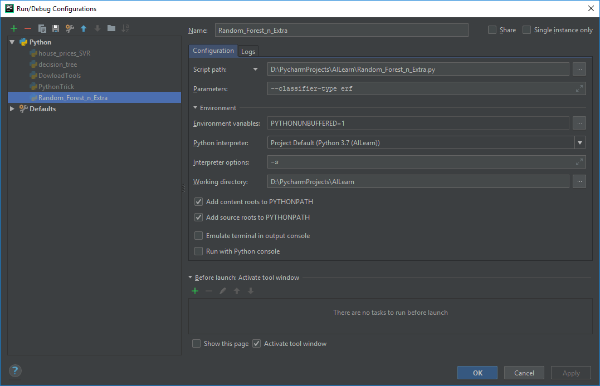
Chúng ta xét 2 hình output bên cạnh nhau khi thay đổi tham số rf và erf ta cố thể thấy đường viền bao quanh bởi Extremely Random Forest tốt hơn là RandomForest.
Ước tính độ tin cậy của một dự đoán
Hãy quan sát các đầu ra thu được ở Terminal, bạn sẽ thấy xác suất được in ra ở mỗi điểm dữ liệu. Những xác suất đó được sử dụng như giá trị để đo độ tin cậy của mỗi lớp. Ước tính giá trị độ tin cậy là một nhiệm vụ rất quan trọng trong Machine Learning. Trong cùng một file python bên trên ta thêm vài dòng để tính toán độ tin cậy của mô hình:
# Tính toán độ tin cậy của một mô hình
#định nghĩa một array của test data points:
test_datapoints=np.array([[5,5],[3,6],[6,4],[7,2],[4,4],[5,2]])
# Object classifier là một phương thức được xây dựng sẵn để tính toán độ tin cậy. Hãy phân loại mỗi điểm và tính toán giá trị độ tin cậy:
print("\n Thước đo độ tin cậy")
for datapoint in test_datapoints:
probabilities=classifier.predict_proba([datapoint])[0]
predicted_class='Class-'+str(np.argmax(probabilities))
print('\nDataPoint:',datapoint)
print('Predict Class:',predicted_class)
# In ra màn hình
visualize_classifier(classifier,test_datapoints,[0]*len(test_datapoints),"Kiểm tra điểm dữ liệu(Test datapoints)")
Chạy đoạn code trên với lần lượt 2 tham số là rf và erf ta sẽ có kết quả như sau ở terminal và hình output:
# Flag erf:
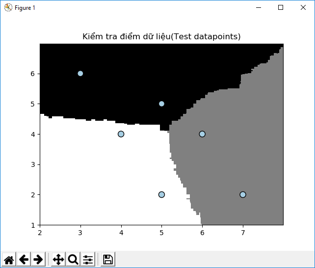
Thước đo độ tin cậy
Probabilities: [0.48904419 0.28020114 0.23075467]
DataPoint: [5 5]
Predict Class: Class-0
Probabilities: [0.66707383 0.12424406 0.20868211]
DataPoint: [3 6]
Predict Class: Class-0
Probabilities: [0.25788769 0.49535144 0.24676087]
DataPoint: [6 4]
Predict Class: Class-1
Probabilities: [0.10794013 0.6246677 0.26739217]
DataPoint: [7 2]
Predict Class: Class-1
Probabilities: [0.33383778 0.21495182 0.45121039]
DataPoint: [4 4]
Predict Class: Class-2
Probabilities: [0.18671115 0.28760896 0.52567989]
DataPoint: [5 2]
Predict Class: Class-2
#Flag rf
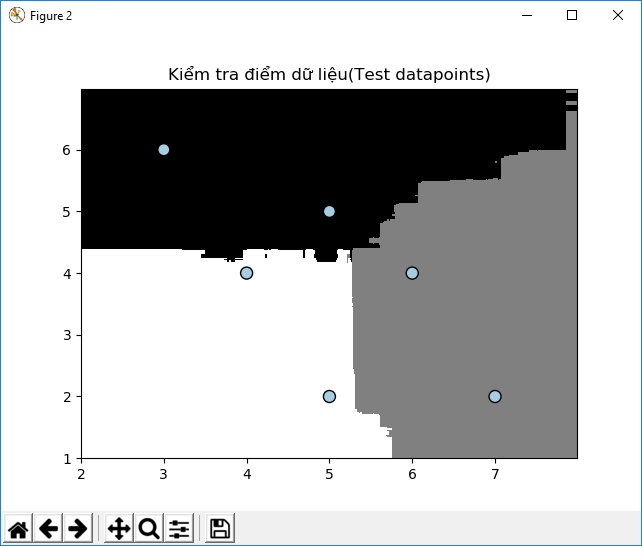
Thước đo độ tin cậy
Probabilities: [0.81427532 0.08639273 0.09933195]
DataPoint: [5 5]
Predict Class: Class-0
Probabilities: [0.93574458 0.02465345 0.03960197]
DataPoint: [3 6]
Predict Class: Class-0
Probabilities: [0.12232404 0.7451078 0.13256816]
DataPoint: [6 4]
Predict Class: Class-1
Probabilities: [0.05415465 0.70660226 0.23924309]
DataPoint: [7 2]
Predict Class: Class-1
Probabilities: [0.20594744 0.15523491 0.63881765]
DataPoint: [4 4]
Predict Class: Class-2
Probabilities: [0.05403583 0.0931115 0.85285267]
DataPoint: [5 2]
Predict Class: Class-2
Trên mỗi điểm dữ liệu nó sẽ tính toán số phần tram của điểm đó thuộc về lớp nào trong 3 lớp chúng ta đã tạo, chúng sẽ chọn một điểm cùng với độ tin cậy cao nhất.
Làm việc cùng với lớp mất cân bằng
Một bộ phân loại chỉ tốt nếu như dữ liệu được sử dụng cho đào tạo. Một trong những vấn đề chúng ta thường phải đối mặt trong thực tế là chất lượng của dữ liệu. Để cho một bộ phân loại được hoạt động tốt, là nó cần nhìn thấy những số bằng nhau của các điểm trong mỗi lớp. Nhưng khi chúng ta thu thập dữ liệu trong thực tế, nó không phải luôn luôn đảm bảo mỗi lớp có chính xác số giống với số của điểm dữ liệu của chúng ta. Nếu một lớp có 10 lần các số điểm dữ liệu hơn mỗi lớp khác, thì bộ phân loại sẽ có xu hướng thiên vị hơn cho lớp đó. Vì thế chúng ta cần đảm bảo chúng ta tính toán đúng cho thuật toán mất cân bằng. Hãy xem điều đó cần phải làm thế nào bằng Python.
# import package cần thiết
import sys
import numpy as np
import matplotlib.pyplot as plt
from sklearn.ensemble import ExtraTreesClassifier
from sklearn import model_selection
from sklearn.metrics import classification_report
from utilities import visualize_classifier
from utilities import report_print
# Chúng ta sẽ sử dụng dữ liệu trong file data/data_imbalance.txt để làm dữ liệu phân tích. Tải dữ liệu. mỗi dòng trong file các giá trị được tách với nhau bởi dấu phẩy. Hai giá trị đầu tiên đối xứng nhau là giá trị đầu vào, và giá trị cuối cùng đại diện cho nhãn đích. Chúng ta có 2 lớp trong bộ dữ liệu(dataset)
input_file="data/data_imbalance.txt"
data=np.loadtxt(input_file,delimiter=',')
X,y=data[:,:-1],data[:,-1]
# Chia dữ liệu nhập vào 2 lớp dựa trên nhãn của nó
class_0=np.array(X[y==0])
class_1=np.array(X[y==1])
# Biểu diễn dữ liệu nhập lên màn hình sử dụng scatter trong plot:
plt.figure()
plt.scatter(class_0[:,0],class_0[:,1],s=75,facecolors='black',edgecolors='black',linewidths=1,marker="x")
plt.scatter(class_1[:,0],class_1[:,1],s=75,facecolors='gray',edgecolors='black',linewidths=1,marker="o")
plt.title("Dữ liệu nhập")
# Chia dữ liệu để tạo bộ dữ liệu train và testing
X_train,X_test,y_train,y_test=model_selection.train_test_split(X,y,test_size=0.25,random_state=5)
#Tiếp theo chúng ta cần định nghĩa tham số cho bộ phân loại Extremely Random Forest.
# Chú ý ở đây là một tham số đầu vào được gọi là balance tham số này điều khiển việc chúng ta có muốn hoặc không muốn sử dụng thuật toán tính toán cho lớp cân băng.
# nếu vậy chúng ta cần thêm một tham số được gọi là class_weight tham số này nói cho lớp phân loại biết nó cần cân bằng với tham số này, vậy nó tỷ lệ với số điểm dữ liệu ở mỗi lớp:
# tham số cho ERF
params={'n_estimators':100,'max_depth':4,'random_state':0}
if len(sys.argv)>1:
if sys.argv[1]=='balance':
params={'n_estimators':100,'max_depth':4,'random_state':0,'class_weight':'balanced'}
else:
raise TypeError("Invalid input argument; Thêm balance vào argument đi pa")
# Xây dựng, fit để luyện và biểu diễn lớp phân loại sử dụng dữ liệu training:
classifier=ExtraTreesClassifier(**params)
classifier.fit(X_train,y_train)
visualize_classifier(classifier,X_train,y_train,'Dữ liệu training')
# Predict dầu ra - dự đoán đầu ra và biểu diễn dữ liệu đầu ra:
y_test_pred=classifier.predict(X_test)
visualize_classifier(classifier,X_test,y_test,'Dữ liệu test')
report_print(classifier,['Class-0','Class-1'],X_train,y_train,y_test,y_test_pred)
Bạn chạy code trên và sẽ thấy một vài hình output như sau:
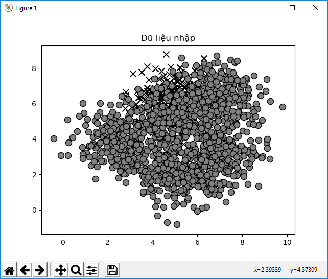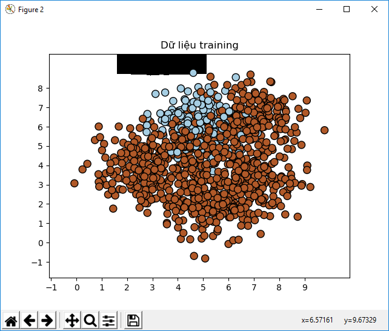
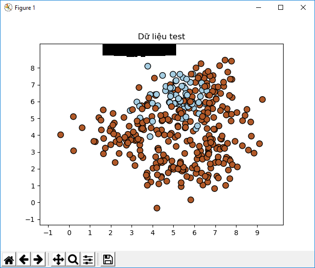
Bạn có thấy khoảng màu đen chính là ranh giới giữa hai lớp. Mảng màu đen trên cùng chính là đại diện cho ranh giới. Output ra Terminal có dạng như sau.
precision recall f1-score support
Class-0 0.00 0.00 0.00 69
Class-1 0.82 1.00 0.90 306
micro avg 0.82 0.82 0.82 375
macro avg 0.41 0.50 0.45 375
weighted avg 0.67 0.82 0.73 375
########################################
Và kèm theo 1 warning
UndefinedMetricWarning: Precision and F-score are ill-defined and being set to 0.0 in labels with no
predicted samples.
'precision', 'predicted', average, warn_for)
Bạn thấy warning này bởi vì giá trị là 0 trong hàng đầu tiên, nó là lý do phép lỗi chia cho 0(ZeroDivisionError) khi chúng ta tính f1-score.
Tiếp theo ta thêm tham số balance vào cho file imbalance_class.py
$ python3 imbalance_class.py balance
giờ thì hình output sẽ trông thế này:
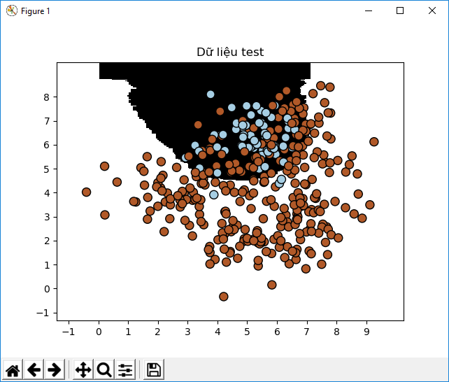
Bằng cách tính toán sự mất cân bằng của lớp (class imbalance), chúng ta đã phân loại điểm dữ liệu ở class-0 với độ chính xác khác 0 (non-zero accuracy)
Tìm tham số training tối ưu sử dụng tìm kiếm lưới (grid-search)
Khi cúng ta làm việc cùng với các lớp phân loại, chúng ta thường luôn luôn không biết tham số tốt nhất là gì. Bạn không thể thử tất cả các trường hợp (brute-force) lần lượt để tìm số tốt nhất một cách thủ công. Đây là nơi grid-search trở nên thích hợp để dùng. Grid-search cho phép chúng ta chỉ ra một khoảng giá trị và bộ phân loại lớp (the classifier) sẽ tự động chạy vài trường hợp cấu hình khác nhau để tìm ra những tham số thích hợp. Hãy xem làm thế nào để thực hiện nó:
import numpy as np
import matplotlib.pyplot as plt
from sklearn.metrics import classification_report
from sklearn import model_selection
from sklearn.model_selection import GridSearchCV
from sklearn.ensemble import ExtraTreesClassifier
from utilities import visualize_classifier,report_print
# Chúng ta sử dụng dữ liệu tại file data_random_forests.txt
input_file="data/data_random_forests.txt"
data=np.loadtxt(input_file,delimiter=',')
X,y=data[:,:-1],data[:,-1]
#Chia dữ liệu thành các lớp
class_0=np.array(X[y==0])
class_1=np.array(X[y==1])
class_2=np.array(X[y==2])
# chia dữ liệu thành tệp dữ liệu để training và testing
X_train,X_test,y_train,y_test=model_selection.train_test_split(X,y,test_size=0.25,random_state=5)
# Tạo một lưới các tham số mà bạn muốn bộ phân loại kiểm tra. Thường thì chúng ta sẽ giữ một tham số hằng ( parameter constant) và những tham số khác nhau (2 tham số thì giữ nguyên một cái còn cái sau thì đưa ra nhiều trường hợp) . Sau đó chúng ta làm ngược lại để chỉ ra sự kết hợp nào là tốt nhất. Trong trường hợp này chúng ta muốn tìm giá trị tốt nhất cho n_estimators và max_depth
# Định nghĩa một lưới tham số
parameter_grid=[ {'n_estimators': [100], 'max_depth': [2, 4, 7, 12, 16]},{'max_depth': [4], 'n_estimators': [25, 50, 100,250]}]
# giờ thì định nghĩa số liệu của bộ phân loại sẽ dùng để tìm ra tham số kết hợp tốt nhất
metrics = ['precision_weighted', 'recall_weighted']
# Cho mỗi số liệu, chúng ta cần chạy grid-search, Nơi mà chúng ta train bộ phân loại cho một bộ kết hợp các tham số
for metric in metrics:
print("\n Tìm tham số cho: ",metric)
classifier=GridSearchCV(ExtraTreesClassifier(random_state=0),parameter_grid,cv=5,scoring=metric)
classifier.fit(X_train,y_train)
#print(getattr(classifier, 'cv_results_', None))
#print(classifier.cv_results_.keys())
for params in classifier.cv_results_['params']:
i=classifier.cv_results_['params'].index(params)
print(params,"---->",round(classifier.cv_results_['mean_test_score'][i],3))
print("\n Tham số tốt nhất", classifier.best_params_)
# print terminal cho mỗi tham số kết hợp:
print("\nĐiểm trên lưới cho tham số trên grid:")
#in report
y_pred=classifier.predict(X_test)
print("\n Báo cáo hiệu suất:\n ")
print(classification_report(y_test,y_pred))
Chạy file trên ta có output sau:
Tìm tham số cho: precision_weighted
{'max_depth': 2, 'n_estimators': 100} ----> 0.847
{'max_depth': 4, 'n_estimators': 100} ----> 0.841
{'max_depth': 7, 'n_estimators': 100} ----> 0.844
{'max_depth': 12, 'n_estimators': 100} ----> 0.836
{'max_depth': 16, 'n_estimators': 100} ----> 0.818
{'max_depth': 4, 'n_estimators': 25} ----> 0.846
{'max_depth': 4, 'n_estimators': 50} ----> 0.84
{'max_depth': 4, 'n_estimators': 100} ----> 0.841
{'max_depth': 4, 'n_estimators': 250} ----> 0.845
Tham số tốt nhất {'max_depth': 2, 'n_estimators': 100}
Điểm trên lưới cho tham số trên grid:
Báo cáo hiệu suất:
precision recall f1-score support
0.0 0.94 0.81 0.87 79
1.0 0.81 0.86 0.83 70
2.0 0.83 0.91 0.87 76
micro avg 0.86 0.86 0.86 225
macro avg 0.86 0.86 0.86 225
weighted avg 0.86 0.86 0.86 225
và tiếp theo với recall:
Tìm tham số cho: recall_weighted
{'max_depth': 2, 'n_estimators': 100} ----> 0.84
{'max_depth': 4, 'n_estimators': 100} ----> 0.837
{'max_depth': 7, 'n_estimators': 100} ----> 0.841
{'max_depth': 12, 'n_estimators': 100} ----> 0.834
{'max_depth': 16, 'n_estimators': 100} ----> 0.816
{'max_depth': 4, 'n_estimators': 25} ----> 0.843
{'max_depth': 4, 'n_estimators': 50} ----> 0.836
{'max_depth': 4, 'n_estimators': 100} ----> 0.837
{'max_depth': 4, 'n_estimators': 250} ----> 0.841
Tham số tốt nhất {'max_depth': 4, 'n_estimators': 25}
Điểm trên lưới cho tham số trên grid:
Báo cáo hiệu suất:
precision recall f1-score support
0.0 0.93 0.84 0.88 79
1.0 0.85 0.86 0.85 70
2.0 0.84 0.92 0.88 76
micro avg 0.87 0.87 0.87 225
macro avg 0.87 0.87 0.87 225
weighted avg 0.87 0.87 0.87 225
Ta thấy kết quả thu được là khác nhau bởi vì precision weight,và recall weight là hai số liệu khác nhau và đòi hỏi kết hợp các tham số khác nhau.
Tính toán sự quan trọng tương đối
Khi chúng ta làm việc cùng với một tập dữ liệu (dataset) có N-chiều điểm dữ liệu, chúng ta phải hiểu tất cả các tính năng không phải đều quan trọng như nhau. Một vài cái cần phải phân biệt với những cái khác. Nếu chúng ta có những thông tin này, chúng ta ó thể dùng nó để giảm các chiều lại. Nó rất hữu dụng trong việc giảm sự phức tạp và tăng tốc độ của thuật tóa. Thi thoảng một vài tính năng thật sự dư thừa. vì thế chúng cần phải "di dời" ra khỏi tập dự liệu. Chúng ta sẽ sử dụng AdaBoost Regressor để tính toán tính năng quan trọng. AdaBoost, là từ viết tắt của Adaptive Boosting – Tăng cường thích ứng, là một thuật toán thường được dùng kết hợp với những thuật toán Machine Learning khác để tăng hiệu quả. Trong AdaBoost, một điểm dữ liệu luyên tập (training data point) được rút ra từ một bộ phân phối để luyện cho bộ phân loại hiện tại. Bộ phân phối này được cập nhật lặp đi lặp lại để các bộ phân loại tiếp theo tập trung vào những điểm dữ liệu khó. Điểm dữ liệu khó là những điểm dữ liệu phân loại sai. Điều này được thực hiện bởi cách cập nhật các bộ phân phối ở mỗi bước. Điều này sẽ làm cho điểm dữ liệu mà trước đó phân loại sai nhiều khả năng xuất hiện trong tập dữ liệu mẫu tiếp theo để training. Những bộ phân loại này sau đó sẽ được xếp chồng lên nhau và quyết định sẽ được đưa ra thông qua bầu chọn đa số.
Bắt đầu với đoạn code sau
import numpy as np
import matplotlib.pyplot as plt
from sklearn.ensemble import AdaBoostClassifier
from sklearn.tree import DecisionTreeRegressor
from sklearn import datasets
from sklearn.metrics import mean_squared_error,explained_variance_score
from sklearn.model_selection import train_test_split
from sklearn.utils import shuffle
from sklearn.svm import SVC
# Đầu tiên ta sử dụng data có sẵn trong scikit-learn:
data=datasets.load_diabetes()
# Xáo trộn dataset để không làm phân tích của chúng ta bị giống nhau
X,y=data['data'],data['target']
#shuffle(iris.data,iris.target,random_state=7)
#shuffle(data[:,:-1],data[:,-1],random_state=7) #
print(data.feature_names)
print("*"*40)
#print(y)
# Chia dữ liệu để train và test
X_train,X_test,y_train,y_test=train_test_split(X,y,test_size=0.2)
# Định nghĩa và train AdaBoost sử dụng Decision Tree regressor như là một mô hình riêng
svc=SVC(probability=True,kernel='linear')
DTR=DecisionTreeRegressor(max_depth=4)
regressor=AdaBoostClassifier(base_estimator=None,algorithm="SAMME",n_estimators=50,learning_rate=2)
model=regressor.fit(X_train,y_train)
# Ước tính hiệu suất của phép hồi quy (regressor):
y_pred=model.predict(X_test)
mse=mean_squared_error(y_test,y_pred)
evs=explained_variance_score(y_test,y_pred)
print("\nAdaptiveBoost REGRESSOR")
print("\nMean square error",round(mse,2))
print("\nVariance Score: ",round(evs,2))
# Phép hồi quy này có một phương thức có sẵn có thể gọi để tính độ quan trọng tính năng tương đối:
feature_importances=regressor.feature_importances_
feature_name=data.feature_names
# Đơn giản hóa giá trị của độ quan trọng tính năng tương đối:
feature_importances=100.0*(feature_importances/max(feature_importances))
# Sắp xếp feature lại (sort) để có thể phác họa thành đồ thị:
index_sorted=np.flipud(np.argsort(feature_importances))
# Sắp xếp điểm trên trục X để làm đồ thị dạng biểu đồ
pos=np.arange(index_sorted.shape[0])+1
# vẽ biểu đồ với plot
plt.figure()
plt.bar(pos,feature_importances[index_sorted],align='center')
plt.xticks(pos,np.array(feature_name)[index_sorted])
plt.ylabel('Độ quan trọng tương đối')
plt.title("Độ quan trọng của tính năng sử dụng AdaBoost")
plt.show()
và ta có biểu đồ cột như sau 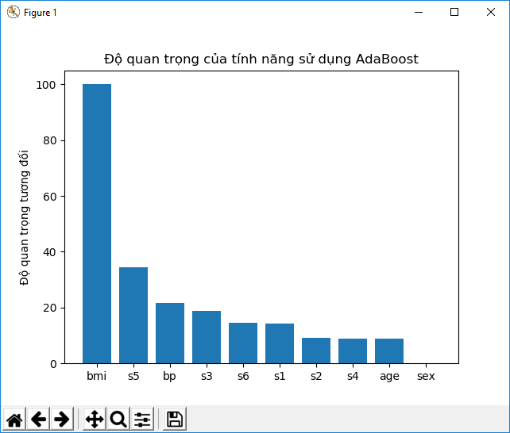
Nhìn vào biểu đồ trên ta có thể thấy đối với việc lấy dữ liệu để chuẩn đoán bệnh tiểu đường thì chỉ số bmi là chỉ số quan trọng nhất cần được chú ý.
Dự đoán tình hình giao thông sử dụng Extremely Random Forest regressor
Hãy ứng dụng những cái ta đã học ở phần trước để giải quyết một vấn đề thực tế. Chúng ta có thể sử dụng dữ liệu ở đây : https://archive.ics.uci.edu/ml/datasets/Dodgers+Loop+Sensor . Bộ dữ liệu này bao gồm dữ liệu đã tính toán số xe cộ di truyển trên đường trong các trận bóng chày được chơi ở sân Los Angerles Dodgers. Để dữ liệu sẵn sàng để phân tích chúng ta phải xử lý thô nó trước. Dữ liệu xử lý thô có trong file traffic_data.txt. trong file này mỗi dòng dùng dấu ',' để chia các chữ ra. Hãy xem dòng đầu tiên như thế nào:
Tuesday,00:00,San Francisco,no,3
Nhìn vào dữ liệu trên ta có thể thấy nó có dạng sau: Ngày trong tuần, thời gian trong ngày, tên đội đối thủ,giá trị binarray chỉ ra trận đấu đó có đang diễn ra hay không (yes,no), cuối cùng là số phương tiện di chuyển.
Nhiệm vụ của chúng ta là dự đoán số phương tiện đang di chuyển bằng cách đưa ra những thông tin. Từ kết quả output được lấy giá trị liên tục, chúng ta cần xây dựng một mô hình có thể dự đoán được kết quả output. (từ giờ mình sẽ dùng output-đầu ra và input-đầu vào ko dịch sang tiếng việt 2 từ này nữa). Chúng ta sẽ sử dụng ERF để xây dựng mô hình này.
Tạo file python với tên gọi traffic_prediction.py
import numpy as np
import matplotlib.pyplot as plt
from sklearn.metrics import classification_report,mean_absolute_error
from sklearn import model_selection,preprocessing
from sklearn.ensemble import ExtraTreesRegressor
# Load data từ file txt
input_file="data/traffic_data.txt"
data=[]
with open(input_file,'r') as f:
for line in f.readlines():
items=line[:-1].split(',')
data.append(items)
data=np.array(data)
# Chúng ta cần mã hóa những features không phải là số trong dữ liệu. Chúng ta cũng cần đảm bảo là chúng ta không mã hóa nhầm số. Mỗi tính năng (features) cần được mã hóa cũng cần phải có một nhãn được mã hóa riêng biệt. Chúng ta cần theo dõi những mã hóa này bởi vì chúng ta sẽ cần chúng khi chúng ta muốn tính toán output cho một điểm dữ liệu không biết.
#Giờ thì tạo một bộ mã hóa nhãn
# Chuyển đổi dữ liệu chữ thành dữ liệu số
label_encoder=[]
X_encoded=np.empty(data.shape)
for i,item in enumerate(data[0]):
if item.isdigit():
X_encoded[:,i]=data[:,i]
else:
label_encoder.append(preprocessing.LabelEncoder())
X_encoded[:,i]=label_encoder[-1].fit_transform(data[:,i])
X=X_encoded[:,:-1].astype(int)
y=X_encoded[:,-1].astype(int)
# Chia dữ liệu vào tập training và testing
X_train,X_test,y_train,y_test=model_selection.train_test_split(X,y,test_size=0.25,random_state=5)
# Train một model dùng Extremely Forest
regressor=ExtraTreesRegressor(n_estimators=100,max_depth=4,random_state=0)
model=regressor.fit(X_train,y_train)
# Tinhs toán hiệu suất của mô hình dựa trên dữ liệu test
y_pred=model.predict(X_test)
print("Mean absolute error: ",round(mean_absolute_error(y_test,y_pred),2))
# Bây giờ sẽ xem xét làm sao để tính Output trên một điểm dữ liệu không biết. Chúng ta sẽ sử dụng những bộ mã hóa nhãn để chuyển đổi những tính năng không phải số thành những giá trị số:
test_datapoint=['Tuesday','02:00','San Francisco','no']
test_datapoint_encoded=[-1]*len(test_datapoint)
count=0
for i,item in enumerate(test_datapoint):
if item.isdigit():
test_datapoint_encoded[i]=int(test_datapoint[i])
else:
test_datapoint_encoded[i]=int(label_encoder[count].transform([test_datapoint[i]]))
count+=1
test_datapoint_encoded=np.array(test_datapoint_encoded)
# Dự đoán kết quả Output
print("Dự đoán số lượng xe là: ",model.predict([test_datapoint_encoded])[0])
Kết quả ở Terminal:
Mean absolute error: 7.42
Dự đoán số lượng xe là: 4.937275750980459
Process finished with exit code 0
Tổng kết
Trong chương này chúng ta đã học về Ensemble Learning và học cách làm thế nào để ứng dụng nó trong thực tế. Chúng ta bàn luận về Decision Tree (Cây quyết định) và cách xây dựng một mô hình phân loại dựa trên nó.
Chúng ta đã học về Random Forest và Extremely Random Forest, và cách xây dựng mô hình phân loại dựa trên chúng. Chúng ta hiểu cách để ước tính mức độ tin cậy của một mô hình dự đoán. Chúng ta cũng học cách làm thế nào để giải quyết vấn đề mất cân bằng giữa các lớp.
Chúng ta đã thảo luận về cách tìm tham số tối ưu để xây dựng những mô hình sử dụng tìm kiếm lưới (grid-search). Chúng ta học về cách tính độ quan trọng tính năng tương đối. Và sau đó áp dụng kỹ thuật Ensemble Learning để giải quyết vấn đề trong thực tế là, thử dự đoán mật độ giao thông sử dung Extremely Random Forests.
Trong chương tiếp theo chúng ta sẽ thảo luận về học không giám sát và cách phát hiện mẫu dữ liệu thị trường chứng khoán.